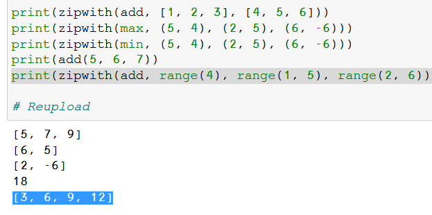

בדקי שהקריאה הבאה עובדת בקוד שלך:
add(5, 6, 7)

בדקי שהקריאה הבאה עובדת בקוד שלך:
add(5, 6, 7)
אז אני מבין שיש דרך בלי זה 
טיפלתי במיקרה קצה.
ול add(5, 6, 7)
הוא מחזיר [5, 6, 7] ואין שגיאה של בודק.
אבל אני לא ממש אוהבת את מה שעשיתי שם עם ADD כדי שזה יקרה ואני בטוחה שיש דרך חכמה וטובה יותר.
הוספתי דוגמה עם round כדי להבהיר איפה הפונקציה שלך עלולה פחות להצליח.
נההה הוא עובד גם שם!! 
אחרי מלחמה קשה במיוחד אני חושבת שיש לי תרגיל סופי טוב ואני מרוצה!
לכך לי קצת זמן אבל עובדדדדדדדדדד!!!
רוב הבעיות היו לי עם הפונקציה של ADD שלא ממש הבנתי מהיא אמורה לעשות עד שכן הבנתי.
zip_with(round, [1.1234] * 4, range(4))
מחזיר לי [1.0, 1.1, 1.12, 1.123]
ברכות
אני חייב להבין משהו:
קראתי שברגע שנכתב לפונקציה לקבל *args, זה באופן אוטומטי מקבל טאפל של ארגומנטים.
אם הבנתי נכון, זה לא מתיישב עם הבקשה לא לשלוח טאפל.
וגם לא מסתדר עם הבודק האוטומטי שמעלה שגיאה של
unsupported operand type(s) for +: ‘int’ and ‘tuple’
אשמח להבין לעומק.
תשחק קצת עם unpacking, אפשר להעביר לפונקציה שמקבלת מספר משתנה של ארגומנטים את הארגומנטים עצמם לא כ tuple.
אני מרים י ד י י ם .
גם אני לא מבין - כל הוריאציות עובדות, כולל add(5,6,7) אבל עדיין הבודק מודיע על אותה שגיאה (כמעט):
TypeError: unsupported operand type(s) for +: 'int' and 'list'
ודאו שאצלכם זה עובד עבור הדוגמה של ה־range.
עובד:
print(zipwith(add, range(4), range(1, 5), range(2, 6)))
ומדפיס:
[3, 6, 9, 12] (אבל בכיוון הפוך, כלומר [12 ,9 ,6 ,3])

אולי זה יעזור.
שאלה -
אם אני כותבת פונקציה חדשה עם שם של פונקציה שכבר קיימת בפייתון,
כמו add, len וכו’,
אני לא דורסת לצמיתות את הפונקציה המקורית של פייתון במחשב שלי? וכל פעם שארצה להשתמש
בפונקציה הזו בעתיד הוא ישתמש בפונקציה החדשה שכתבתי?
אצלי ה-range עובד-!-
והדוגמא עם round גם?
לא (:
הפונקציות נשמרות בזיכרון, ופייתון טוענת את מרחב הזיכרון שלה מחדש בכל פעם שהיא עולה. מספיק שתעשי Restart kernel בג’ופיטר כדי לאפס את זה.
עוד משהו: add היא לא באמת פונקציה בפייתון (אלא אם עשית from x import add)
גם לי יש את אותה השגיאה וזה עובד על כל הדוגמאות כולל range. לא הבנתי את השגיאה כלכך, אז אם מישהו פתר אשמח לעזרה להבין 
הכוונה על הדוגמה עם ה־round*, טעות שלי. אם עובד לכם על round ועדיין קיבלתם אותה שגיאה, שלחו לי ואציץ
לא עובד על round